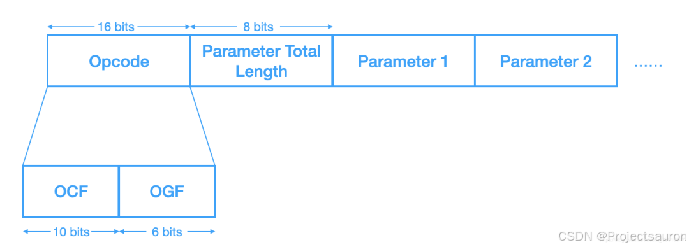

蓝牙BLE协议讲解
[toc]
一、概述
蓝牙技术起源于爱立信在 1994 年提出的方案，旨在解决移动电话和其他配件之间进行低功耗、低成本的无线通信连接的方法。
1、发展历史
- 第一代蓝牙主要是指 90 年代的 V1.0～V1.2 版本，是关于短距离通信的早期探索，此时还存在许多问题，应用不是特别广泛
- 第二代蓝牙主要是 00 年中 V2.0～V2.1 版本，新增了 EDR（Enhanced Data Rate）技术提高传输速率，以及体验及安全
- 第三代蓝牙主要是 00 年末 V3.0 版本，新增了 802.11 WiFi 协议，引入了 AMP（Generic Alternate MAC/PHY）交替射频技术，极大的提高了传输速率并降低功耗
- 第四代蓝牙是 10 年以来的 V4.0～V4.2 版本，主推 LE（Low Energy，低功耗），大约仅消耗十分之一，将三种规格，包括==经典蓝牙==、==高速蓝牙==、和==低功耗蓝牙==，集中在一起形成一套综合协议规范
- 第五代蓝牙是 16 年开始提出的 V5.0 版本，主要是为了支持物联网，在功耗、传输速率、有效传输距离、数据包容量方面都做了极大的提升
接下来的分析都是基于 V4.1 版本，方便入门，可以理解很多核心协议的设计思想。
2、BLE
经过第一小节的介绍就可以直到 BLE 是低功耗蓝牙的英文缩写（Bluetooth Low Energy），是蓝牙4.0版本起开始支持的新的、低功耗版本的蓝牙技术规范。
蓝牙技术联盟（Bluetooth SIG）在 2010 年发布了跨时代的蓝牙 4.0，它并不是蓝牙 3.0 的简单升级版本，而是全新的技术架构，蓝牙 4.0 版本分两种模式：==单模蓝牙==和==双模蓝牙==。
常见的蓝牙音箱，是典型的双模蓝牙，它需要传输大量的音频数据。而小米手环，蓝牙温度计则属于单模蓝牙。行业里一般不讲单模蓝牙，而是统一称为低功耗蓝牙。
如今，蓝牙 5.0 已经发布和应用，4 倍通信速度、2 倍的通信距离以及 Mesh 组网特性，将使蓝牙成为物联网领域的重要的技术之一。
3、蓝牙简介
蓝牙是一种近距离无线通信技术，运行在 2.4GHz 免费频段，目前已大量应用于各种移动终端，物联网，健康医疗，智能家居等行业。上一小节提到，蓝牙 4.0 以后的版本分为两种模式，单模蓝牙和双模蓝牙。
- 单模蓝牙，即低功耗蓝牙模式，是蓝牙 4.0 中的重点技术，低功耗，快连接，长距离。
- 双模蓝牙，支持低功耗蓝牙的同时还兼容经典蓝牙，经典蓝牙的特点是大数据高速率，例如音频、视频等数据传输。
经典蓝牙支持音频（HFP/HSP，A2DP）和数据（SPP，HID 等）两大类协议，在音箱，耳机，汽车电子及传统数传行业，由于苹果对经典蓝牙数据传输接口有限制（需要过 MFI 认证），加上功耗偏大，因此在目前移动互联应用中慢慢地被边缘化。因此低功耗蓝牙顺势而出，由于可支持苹果 4S 以上及安卓 4.3 系统以上的数据传输，且功耗极低，目前正在被越来越多的移动互联设备所采用，但低功耗蓝牙不支持音频协议，并且受数据传输速度限制，其应用也被限制在小数据传输行业。而蓝牙双模则是综合了两者的优缺点，既可以支持音频传输，同样可支持数据传输，并且兼容性也是两者之和，在对功耗要求不苛刻的情况下，是比较理想的选择。
4、蓝牙技术分类
Basic Rate（BR）/AMP：最初的蓝牙技术，包括可选的 EDR（Enhanced Data Rate）技术和交替使用的 MAC 层和 PHY 层扩展 AMP（Alternate MAC and PHY layer extension）
蓝牙诞生之初使用的 BR 技术，传输速率很低，随着发展而变得无法支持，所以引入了 EDR，这时还没有修改软硬件架构，但是之后又落伍了，所以直接引入了 WiFi 的底层协议，也就是
MAC/PHY扩展，但这部分的实现就无法直接更替，所以BR/EDR只能与 AMP交替使用
Low Energy（LE）：蓝牙低功耗，则不关心传输速率，而是从降低功耗的角度实现的另一套技术，跟前面的协议没有丝毫关系
二、BLE 特点
低功耗蓝牙瞄准多个市场，特别是移动智能终端，智能家居，互联设备等领域，主要特点包括：
- 低功耗，使用纽扣电池就可以运行数月至数年。
- 快连接，毫秒级的连接速度，传统蓝牙甚至长达数分钟。
- 远距离，长达数百米的通信距离，而传统蓝牙通常10米左右。
蓝牙联盟沿用经典蓝牙的规范内容，为低功耗蓝牙定义了一些标准 Profile，只要遵守该规范，任意厂家的蓝牙设备，均可以相互连接与通信，例如无线蓝牙键盘鼠标，无论是安卓或是 iOS 还是 Windows，均是即插即用。低功耗蓝牙支持的标准 Profile 有：
- HID，用于无线鼠标，键盘或其他遥控设备。
- BatteryServices，电池状态服务，用于告知电池电量状态。
- HRP，心率计Profile，用于心率采集。等等。
另外，低功耗蓝牙还可以自定义 Profile，伴随着智能手机的发展和普及，低功耗蓝牙的这个特性得到了发扬光大，同时也拓宽了低功耗蓝牙的应用领域。例如，可以自定义一个开关量的 Profile，数据 01 表示开灯，数据 00 表示关灯，然后手机发送数据 01 和 00 就可以控制灯的亮和灭。类似的应用案例有很多，下面总结应用特点：
- 支持自定义 Profile，可以收发任意格式的数据，如
01和00 - 支持自定义设备，支持任意设备的连接和通信，例如智能蓝牙插座等。
注意：低功耗蓝牙的 Profile 均基于 GATT（通用属性规范，后面会详解）之上，如 HID over GATT。也就是说，经典蓝牙中的 HID 规范与低功耗蓝牙中的 HID 规范用的是两个不同的通道。
三、BLE 工作流程
1、角色
BLE 设备角色主要分为两种角色，主机（Master 或 Central）和从机（Peripheral），当主机和从机建立连接之后才能相互收发数据
- 主机，主机可以发起对从机的扫描连接。例如手机，通常作为 BLE 的主机设备
- 从机，从机只能广播并等待主机的连接。例如智能手环，是作为 BLE 的从机设备
另外还有观察者（Observer）和广播者（Broadcaster），这两种角色不常使用，但也十分有用，例如 iBeacon，就可以使用广播者角色来做，只需要广播特定内容即可。
- 观察者，观察者角色监听空中的广播事件，==和主机唯一的区别是不能发起连接，只能持续扫描从机==。
- 广播者，广播者可以持续广播信息，==和从机的唯一区别是不能被主机连接，只能广播数据==
蓝牙协议栈没有限制设备的角色范围，==同一个 BLE 设备，可以作为主机，也可以作为从机==，我们称之为 主从一体，主从一体的好处是，每个 BLE 设备都是对等的，可以发起连接，也可以被别人连接，更加实用。
2、广播
广播是指==从机每经过一个时间间隔发送一次广播数据包==，这个时间间隔称为广播间隔，这个广播动作叫做广播事件，只有当从机处于广播状态时，主机才能发现该从机。
在每个广播事件中，广播包会分别在 37、38 和 39 三个信道上依次广播，如下图所示。

广播时间间隔的范围是从 20ms 到 10.24s，广播间隔影响建立连接的时间。广播间隔越大，连接的时间越长。
另外 BLE 链路层会在两个广播事件之间添加一个 0~10ms 的随机延时，保证多个设备广播时，不会一直碰撞广播。也就是说，设置 100ms 的广播间隔，实际上两次广播事件的时间间隔可能是 100~110ms 之间的任意时间。
广播数据包最多能携带 31 个字节的数据，一般包含可读的设备名称，设备是否可连接等信息。
当主机收到从机广播的数据包后，它可以再发送获取更多数据包的请求，这个时候从机将广播扫描回应数据包，扫描回应数据包和广播包一样，可以携带 31 个字节的数据。
提示：蓝牙4.x，广播有效载荷最多是 31 个字节。而在蓝牙 5.0 中，通过添加额外的广播信道和新的广播 PDU，将有效载荷增加到了 255 个字节
3. 扫描
扫描是==主机监听从机广播数据包和发送扫描请求的过程==，主机通过扫描，可以获取到从机的广播包以及扫描回应数据包，主机可以对已扫描到的从机设备发起连接请求，从而连接从机设备并通信。
扫描动作有两个比较重要的时间参数：扫描窗口和扫描间隔，如果扫描窗口等于扫描间隔，那么主机将一直处于扫描状态之中，持续监听从机广播包。

- 被动扫描，主机监听广播信道的数据，当接收到广播包时，协议栈将向上层（也就是应用层，用户可编程）传递广播包。
- 主动扫描，主动扫描除了完成被动扫描的动作外，还会向从机发送一个扫描请求，从机收到该请求时，会再次发送一个称作扫描回应的广播包。
4. 连接
在 BLE 连接中，使用==跳频方案==，两个设备在特定时间、特定频道上彼此发送和接收数据。这些设备稍后在新的通道（协议栈的链路层处理通道切换）上通过这个约定的时间相遇。这次用于收发数据的相遇称为连接事件。如果没有要发送或接收的应用数据，则交换链路层数据来维护连接。两个连接事件之间的时间跨度称为连接间隔，是以 1.25 ms 为单位，范围从最小值 7.5 ms 到最大值 4.0 s。
跳频是一种无线通信技术，它在传输数据时不固定在一个特定的频率上，而是在不同的频率上进行快速切换。
在跳频通信中，发送端和接收端事先约定好一个频率跳变序列，当发送数据时，会根据这个序列在不同的频率之间跳跃。
4.1 连接参数
- Connection Interval（连接间隔），两次连接事件之间的时间间隔称为连接间隔。1.25 ms 为单位，范围从最小值 7.5 ms 到最大值 4.0 s
- Slave Latency（从机延迟），如果从机没有要发送的数据，则可以跳过连接事件，继续保持睡眠节省电量。
- Supervision Time-out（监控超时），是两次成功连接事件之间的最长时间。如果在此时间内没有成功的连接事件，设备将终止连接并返回到未连接状态。该参数值以 10 ms 为单位，监控超时值可以从最小值 10（100 ms）到 3200（32.0 s）。超时必须大于有效的连接间隔。

4.2 连接参数更新请求
连接参数由主机发起连接的时候提供，如果从机对连接参数有自己的要求，例如要求更低的功耗，或者更高的通信速率等，从机可以向主机发送连接参数更新请求。
从机可以在连接后的任何时候发起连接参数更新请求，但最好不要在主从建立连接后立刻发起，建议==延迟 5s 左右==再发送请求。
4.3 有效连接间隔
Effective Connection Interval（有效连接间隔）等于两个连接事件之间的时间跨度，假设从机跳过最大数量的连接事件，且允许从机延迟（如果从机延迟设置为 0，则有效连接间隔等于实际连接间隔，）。
从机延迟表示可以跳过的最大事件数。该数字的范围可以从最小值 0（意味着不能跳过连接事件）到最大值 499。最大值不能使有效连接间隔（见下列公式）大于 16 秒。间隔可以使用以下公式计算：
$$
\text {Effective Connection Interval = (Connection Interval) × (1 + [Slave Latency])}
$$
例：
现在有：Connection Interval: 80 (100 ms，单位为 1.25ms，故 80*1.25 = 100ms)、Slave Latency: 4
则：Effective Connection Interval: (100 ms) × (1 + 4) = 500 ms
当没有数据从从机发送到主机时，从机就每 500ms 一个连接事件交互一次。
4.4 连接参数的优化考量
在许多应用中，从机跳过最大连接事件数。选择正确的连接参数组在低功耗蓝牙设备的功率优化中起重要作用。以下列表给出了连接参数设置中权衡的总体概述。
- 减少连接间隔如下：
- 增加两个设备的功耗
- 增加双向吞吐量
- 减少任一方向发送数据的时间
- 增加连接间隔如下：
- 降低两个设备的功耗
- 降低双向吞吐量
- 增加任一方向发送数据的时间
- 减少从机延迟（或将其设置为零）如下：
- 增加外围设备的功耗
- 减少外围设备接收从中央设备发送的数据的时间
- 增加从机延迟如下：
- 在周边没有数据发送期间，可以降低外设的功耗到主机设备
- 增加外设设备接收从主机设备发送的数据的时间
5、通信
通俗的说，我们将从机具有的数据或者属性特征，称之为 Profile。
从机中添加 Profile 配置文件（定义和存储 Profile），作为 GATT 的 Server 端，主机作为 GATT 的 Client 端。
Profile 包含一个或者多个 Service，每个 Service 又包含一个或者多个 Characteristic。主机可以发现和获取从机的 Service 和 Characteristic，然后与之通信。==Characteristic 是主从通信的最小单元==。
- 主机可主动向从机 Write 写入或 Read 读取数据。
- 从机可主动向主机 Notify 通知数据。

注意，这里引用了服务 Service 和 特征值 Characteristic 的概念。每个服务和特征值都有自己的唯一标识 UUID，标准 UUID 为 128 位，蓝牙协议栈中一般采用 16 位，也就是两个字节的 UUID 格式。
- Service（服务）是一种行为的抽象，具有唯一标识 UUID，每个 service 包含一个或多个 Characteristic，也可以通过 include 的方式包含其他 service
- Characteristic（特征）可以理解成一个属性，是真正与设备通信相关的，数据发送和接收的最基本单位，通过对特征的读写实现蓝牙双向通信，它由一个 Propertities（定义 Value 的使用规范和 Descriptor 的访问规范）、一个 Value（特征的实际取值）和一个或多个Descriptor（Value 相关的描述信息）组成，每个特征也具有自己的唯一标识，但是有三种形式：
- 16-bit 是官方认证，收费，
Bluetooth_Base_UUID为00000000-0000-1000-8000-00805F9B34FB - 16-bit转128-bit，格式为
0000xxxx-0000-1000-8000-00805F9B34FB - 32-bit转128-bit，格式为
xxxxxxxx-0000-1000-8000-00805F9B34FB
- 16-bit 是官方认证，收费，
一个从机设备包括一个或者多个服务；一个服务中又可以包括一条或者多条特征值，每个特征值都有自己的属性 Property，属性的取值有：可读 Read，可写 Write 以及 通知 Notify。
- 可读可写，表示该特征值可以被主机读取和写入数据，
- 而通知则表示从机可以主动向主机发送通知数据。这便是主从机之间两个典型的通信方式。
下图是一个典型的从机设备，该从机包含有一个 Profile，包括两个 Service 和五个 Characteristic。我们先来介绍这些特征值的作用，然后介绍如何通过特征值通信。

- 服务 0x180A
180A 是蓝牙协议里标准的服务 UUID，用来描述设备信息（Device Information），可以通过该服务，来提供从机设备的相关说明，例如硬件版本，软件版本，序列号等信息。这样，主机就可以获取从机的设备信息。上图中我们添加了三个提供具体设备信息的特征值，他们分别是：
- 特征值 0x2A24，描述产品型号（Model Number String），例如某智能锁的产品型号为：“DSL-C07”。
- 特征值 0x2A25，描述产品序列号（Serial Number String），例如某智能锁的产品序列号为：“lkjl0016190502500269”
- 特征值 0x2A26，描述产品固件版本号（Firmaware Revision String），例如某智能锁的固件号为：“2.7.2.0”
上述特征值仅有 Read 属性，因此主机只能读，不能执行写操作。
- 服务 0xFFF0
FFF0 是我们自定义的服务 UUID，它包含两个特征值，用来发送和接收数据。
- 特征值 0xFFF1，自定义的数据发送通道，具有 Read 和 Write 属性，主机可以通过该特征值，向从机发送数据，至于发送的数据最大长度，可以在 Profile 中配置。
- 特征值 0xFFF2，自定义的数据接收通道，具有 Notify 属性，从机可以通过该特征值，主动向主机发送数据。
假设主机写特征值的协议栈函数原型为 int GATT_WriteCharValue(uuid_t UUID, uint8 *pValue, uint8 len)
假设从机发送通知的协议栈函数原型为 int GATT_Notification(uuid_t UUID, uint8 *pValue, uint8 len)
那么主机向从机发送 Hello，可以这样调用协议栈的函数：GATT_WriteCharValue(0xFFF1,"Hello",5)
那么从机向主机发送 1234，可以这样调用协议栈的函数：GATT_Notification(0xFFF2,"1234",4)
6、断开
主机或从机都可以发起断开连接请求，对方会收到该请求，然后断开连接恢复连接前的状态。
四、BLE 协议栈
1、功能框图
BLE 协议栈一般是指芯片厂家，依据 Bluetooth SIG 发布的 Bluetooth Core Specification（核心协议）的实现的代码固件，并提供函数接口，由芯片内部程序调用，可实现上节BLE工作流程等相关功能。
常见的协议栈有德州仪器 TI 的 ble-stack 和 Nordic 的 SoftDevice。
下图是 TI 的 CC26 系列芯片协议栈结构图，
下图是 Nordic 的 nRF52 系列芯片的协议栈结构图。

2、协议栈结构
从上节的两张协议栈功能框图中可以看出，无论是哪个芯片厂商实现的 BLE 协议栈，其结构都非常的相似，均三个部分：
- 底层：Controller
- 中层：Host
- 顶层：Application

然后每一层又分成若干个子模块。我们现在由下而上，逐层介绍。
我们将位于顶层的应用层 Application 也归到协议栈中描述，其实，应用层 Application 不属于协议栈，它是用来调用协议栈提供的接口，然后实现蓝牙的功能。

2.1 控制器 Controller
Physical Layer（PHY，物理层）。PHY 层用来指定 BLE 所用的无线频段，调制解调方式和方法等。PHY 层做得好不好，直接决定整个 BLE 芯片的功耗，灵敏度以及 selectivity 等射频指标。Link Layer（LL，链路层）。LL 层是整个 BLE 协议栈的核心，也是 BLE 协议栈的难点和重点。像 Nordic 的 BLE 协议栈能同时支持 20 个 link（连接），就是 LL 层的功劳。LL 层要做的事情非常多，比如具体选择哪个射频通道进行通信，怎么识别空中数据包，具体在哪个时间点把数据包发送出去，怎么保证数据的完整性，ACK 如何接收，如何进行重传，以及如何对链路进行管理和控制等等。LL 层只负责把数据发出去或者收回来，对数据进行怎样的解析则交给上面的 GAP 或者 ATT- LL 中的信道设计：BLE 系统基于通信场景，在 40 个物理信道中选取三个作为广播信道，处理数据量小、发送不频繁、时延不敏感的场景，存在的问题就是不可靠、效率低、不安全；另外的场景则在剩下的 37 个信道中选取一个为双方建立单独信道，并且为了抗干扰采用跳频技术。
为此，LL 为通信双方实体定义了以下状态及切换条件：
 - **Standby**：初始状态，不收发数据，接受上层协议命令与其他状态切换 - **Advertising**：通过广播发送数据的状态，建立连接后可进入 Connection - **Scanning**：接收广播的数据的状态 - **Initiating**：特殊的接收状态，类似 Scanning，接收 Advertiser 广播的连接数据，建立连接后进入 Connection - **Connection**：建立连接后拥有单独的通道Host Controller Interface（HCI）。协议栈应用开发中，我们会经常看到 HCI 的身影，它对上层 Host 提供 Controller 的功能接口，将Link Layer 提供的功能封装成Command/Event组，所以称作Host Controller Interface。这些 Command/Event 包括广播、扫描、连接建立的相关操作，这些都可以通过 hcitool 命令进行测试
Command 格式：

OCF（Opcode Command Field）表示特定的 HCI 命令OGF（Opcode Group Field）表示该 HCI 命令所属组别- 它们共同组成 16 位操作码；Parameter Total Length 表示所有参数总长度
- 所有 BLE 相关的 HCI Command 的 OGF 都是 0x08
Event 格式：
2.2 主控 Host
Logical Link Control Adaptation Protocol（L2CAP，逻辑链路控制和适配协议）。L2CAP 对 LL 进行了一次简单封装，LL 只关心传输的数据本身，L2CAP 就要区分是加密通道还是普通通道，同时还要对连接间隔进行管理。它实现逻辑信道的多路复用（multiplexing），对上层数据进行分割和重组，以及后续的流控、错误控制和重传等Attribute Protocol（ATT，属性协议）。ATT 层用来定义用户命令及命令操作的数据，比如读取某个数据或者写某个数据。BLE 协议栈中，开发者接触最多的就是 ATT。BLE 引入了 attribute 的概念，用来描述一条一条的数据。Attribute 除了定义数据，同时定义该数据可以使用的 ATT 命令，因此这一层被称为 ATT 层。- 为每个 Attribute 定义了三个属性：
- Type，即 Attribute 的类型，使用 UUID 区分
- Handle，服务端用来唯一标识 Attribute 的 16-bit 数值
- Value，Attribute 的值
- 为每个 Attribute 定义了一系列权限，方便服务端控制客户端的行为，包括访问/加密/认证/授权
- 对于不同的 Attribute，客户端对服务端的访问方式也不一样，包括 Find/Read/Write
- 传输过程是在 L2CAP 的基础上，使用基于通道的多路复用，CID 为 0x0004
- 为每个 Attribute 定义了三个属性：
Security Manager（SM，安全管理协议）。SMP 用来管理 BLE 连接的加密和安全的，如何保证连接的安全性，同时不影响用户的体验，这些都是 SMP 要考虑的工作。Generic Access Profile（GAP，通用访问配置文件）。GAP 是对 LL 层 payload（有效数据包）如何进行解析的两种方式中的一种。GAP 简单的对 LL payload 进行一些规范和定义，因此 GAP 能实现的功能极其有限。GAP 目前主要用来进行广播，扫描和发起连接等。GAP 定义了蓝牙设备的通用的访问功能，与 GATT 的数据通信过程对应，处理无连接及连接建立过程的通信，也就是为广播、扫描、发起连接这些过程定义统一规范。- 定义了用户接口的基本参数，包括蓝牙地址、名称、pincode、class 等概念
- 定义了设备的角色：
Broadcaster Role：正在发送 advertising events 的设备Observer Role：正在接收 advertising events 的设备Peripheral Role：接受 Link Layer 连接的设备（对应 Link Layer 的 slave 角色）Central Role：发起 Link Layer 连接的设备（对应 Link Layer 的 master 角色）
- 定义了通信的过程和操作模式：
Broadcast mode and observation procedure：实现单向的、无连接的通信Discovery modes and procedures：实现蓝牙设备的发现操作Connection modes and procedures：实现蓝牙设备的连接操作Bonding modes and procedures：实现蓝牙设备的配对操作
Generic Attribute Profile（GATT，通用属性配置文件）。GATT 用来规范 attribute 中的数据内容，并运用 group（分组）的概念对 attribute 进行分类管理。没有 GATT，BLE 协议栈也能跑，但互联互通就会出问题，也正是因为有了 GATT 和各种各样的应用 profile，BLE 摆脱了 ZigBee 等无线协议的兼容性困境，成了出货量最大的 2.4G 无线通信产品。- Attribute 只是将信息（或者说通信数据）做一下抽象，但是真正对抽象的信息做分类管理则是 GATT 来完成
- GATT 提供了这样一种通用的、信息存储与共享的 profile framework，实现 BLE 双向通信
- 事实上，目前几乎所有的BLE应用都基于 GATT 实现通信
下图为 GATT 的层次结构：
2.3 应用Application
应用层是用户开发实际蓝牙应用的地方，包含必要的协议栈参数设置，以及各种功能函数的调用。我们分别从蓝牙从机和蓝牙主机两种设备来分析。
- 蓝牙从机
- 相关硬件和基础服务初始化
- 设置广播参数：广播数据，广播间隔，扫描回应等参数或者数据。
- 设置 Profile：添加从机服务、特征是，还有设置回调函数用于接收主机数据等。
- 设置绑定管理参数（可选）
- 启动广播，开始运行。
- 等待相关事件，及事件处理，例如收到主机发来的数据，被链接等等。
- 蓝牙主机
- 相关硬件和基础服务初始化
- 设置扫描参数。
- 设置连接参数。
- 设置绑定管理参数（可选）
- 启动协议栈，开始运行。
- 等待相关事件，及事件处理，例如扫描事件，从机的 Notify 事件等等。
五、GAP和GATT
蓝牙协议栈分为两类结构：控制器（Controller）和主机（Host）。每个类别都有子类别，这些子类别执行特定的角色。我们将要研究的两个子类别是： 通用访问配置文件（GAP）和 通用属性配置文件（GATT）。
GAP：Generic Access Profile，通用访问配置文件。GATT：Generic Attribute Profile，通用属性配置文件。
1、GAP和GATT区别
- GAP 定义了 BLE 网络堆栈的一般拓扑。
- GATT 详细描述了一旦设备建立连接后如何传输属性（数据）。
GATT 特别关注如何根据其描述的规则格式化打包和发送数据。在 BLE 网络堆栈中，属性协议（ATT）与 GATT 紧密对齐，GATT 直接位于 ATT 的顶部。GATT 实际上使用 ATT 来描述如何从两个连接的设备交换数据。
2、通用访问配置文件（GAP）
BLE 设备可以使用两种机制与外界通信：广播或连接。这些机制受通用访问配置文件（GAP）准则的约束。GAP 定义了启用 BLE 的设备如何使其自身可用，以及两个设备如何直接相互通信。
2.1 建立联系（Connecting）
设备可以通过采用 GAP 中指定的以下角色来加入 BLE 网络：
A、广播（Broadcasting）：这些角色不必显式地相互连接即可传输数据。
- 广播者（Broadcaster）：广播公共数据包的设备，例如可以广播按下按钮的时间。
- 观察者（Observer）：侦听广播者发送的广告包中数据的设备。广播者和观察者之间没有任何连接。
B、连接（Connecting）：这些角色必须显式连接和握手才能传输数据。这些角色比广播角色更常用。
- 从机设备（Peripheral）： 通过广播，告知其他设备自己的存在，以便主机设备可以建立连接。连接后，从机设备不再向其他主机设备广播数据，而是保持与主机设备的连接。
- 从机设备功耗低，因为它们只需要定期发送信标即可。主机设备负责开始与从机设备的通信。
- 手环是 BLE 外设的一个示例。
- 主机设备（Central）：一种通过侦听广播包来启动与从机设备的连接的设备。主机设备可以连接到许多其他从机设备。
- 当主机设备要连接时，它将请求连接数据包发送到从机设备。如果从机设备接受来自主机设备的请求，则建立连接。
- 当您的手机连接到手环时，就是 BLE Central 设备的一个示例。
2.2 连接后（Connected）
==主机设备可以更新连接参数==：主机设备通常在设备与其自身之间建立连接参数。只有主机设备能修改连接参数。但是，从机设备可以要求主机设备更改连接参数，及从机发送更新参数请求。
==从机设备或主机设备可以终止连接==：连接可能由于多种原因而终止，例如设备的电池可能耗尽或网络干扰可能导致连接失败。设备还可以主动与对等设备断开连接。
3、通用属性配置文件（GATT）
3.1 模型角色
GATT 分为两种类型，注意与从机或主机无关。
- 客户端（Client）：客户端可以发送请求给 GATT 服务端，客户端可以读（Read）/写（Write）服务端的属性（Attributes ），通过属性可以通信数据。
- 服务端（Server）：服务端是用来存储属性（Attributes ）的，每当客户端发送请求时，服务端会相应这些请求。
3.2 客户端与服务端的关系
一个示例如下：手环采集了心跳信息，希望计算机读取该信息。手环充当服务端并提供信息。手机充当客户端，读取该信息。
GAP 和 GATT 模型角色基本上彼此独立从机设备或主机设备都可以充当服务端或客户端，这取决于数据的流动方式。
在一般的主从机通信时，主机可以通过读写从机的属性，实现接收和发送数据给从机，从机可以通过发送通知的方式实现与主机的通信。因此，==一般从机是作为 GATT 的服务端，主机作为 GATT 的客户端==。
六、协议栈分层协作
下面以如何发送一个无线数据包的例子来简单阐述协议栈中各分层的作用和必要性。实际上，协议栈的实现可能更加负责，它需要考虑方方面面的因素。
1、发送数据包
假设有设备 A 和设备 B，设备 A 要把自己的电量状态 83%（十六进制表示为 0x53）发给设备 B，该怎么做呢？
作为一个开发者，他希望越简单越好，对他而言，他希望调用一个简单的 API 就能完成这件事，比如 send(0x53)，实际上我们的 BLE 协议栈就是这样设计的，开发者只需调用 send(0x53) 就可以把数据发送出去了，其余的事情 BLE 协议栈帮你搞定。很多人会想，BLE 协议栈是不是直接在物理层就把 0x53 发出去，就如下图所示：
这种方式初看起来是不错，但由于很多细节没有考虑到，实际是不可行的。首先，它没有考虑用哪一个射频信道来进行传输，在不更改 API 的情况下，我们只能对协议栈进行分层，为此引入 LL 层，开发者还是调用 send(0x53)，send(0x53) 再调用 send_LL(0x53,2402M)（注：2402M 为信道频率）。
这里还有一个问题，设备 B 怎么知道这个数据包是发给自己的还是其他人的，为此 BLE 引入 access address 概念，用来指明接收者身份，其中，0x8E89BED6 这个 access address 比较特殊，它表示要发给周边所有设备，即==广播==。如果你要一对一的进行通信（BLE 协议将其称为==连接==），即设备 A 的数据包只能设备 B 接收，同样设备 B 的数据包只能设备 A 接收，那么就必须生成一个独特的随机 access address 以标识设备 A 和设备 B 两者之间的连接。
广播的协议层次如下：
- GAP：以应用程序角度进行功能封装，提供一套统一的、通用的广播规范
- HCI：将 LL 提供的功能抽象成 Command/Events 的形式，供上层使用
- LL：负责广播通信相关功能的定义和实现，包括信道选择、链路状态定义、PDU 定义、设备过滤机制等
2、广播方式
我们先来看一下简单的广播情况，这种情况下，我们把设备A叫 advertiser（广播者），设备 B 叫 scanner 或者 observer（扫描者）。广播状态下设备 A 的 LL 层 API 将变成 send_LL(0x53,2402M, 0x8E89BED6)。
由于设备 B 可以同时接收到很多设备的广播，因此数据包还必须包含设备 A 的 device address（0xE1022AAB753B）以确认该广播包来自设备 A，为此 send_LL 参数需要变成 send_LL(0x53,2402M, 0x8E89BED6, 0xE1022AAB753B)。
LL 层还要检查数据的完整性，即数据在传输过程中有没有发生窜改，为此引入 CRC24 对数据包进行检验 (假设为 0xB2C78E) 。同时为了调制解调电路工作更高效，每一个数据包的最前面会加上 1 个字节的 preamble（前导帧），==preamble 一般为 0x55 或者 0xAA==。这样，整个空中包就变成（注：空中包用==小端模式==表示！）：

不过上面这个数据包还有如下问题：
- 没有对数据包进行分类组织，设备 B 无法找到自己想要的数据 0x53。为此我们需要在 access address 之后加入两个字段：
LL header和长度字节。LL header用来表示数据包的 LL 类型，长度字节用来指明 payload 的长度 - 设备 B 什么时候开启射频窗口以接收空中数据包？
- 如上图 case1 所示，当设备 A 的数据包在空中传输的时候，设备 B 把接收窗口关闭，此时通信将失败；
- 同样对 case2 来说，当设备 A 没有在空中发送数据包时，设备 B 把接收窗口打开，此时通信也将失败。
- 只有 case3 的情况，通信才能成功，即设备A的数据包在空中传输时，设备 B 正好打开射频接收窗口，此时通信才能成功，换句话说，LL 层还必须定义通信时序。
- 当设备 B 拿到数据 0x53 后，该如何解析这个数据呢？它到底表示什么意思呢？这个就是 GAP 层要做的工作。
- GAP 层引入了 LTV（Length-Type-Value）结构来定义数据，比如
020105：02-长度，01-类型（强制字段，表示广播 flag，广播包必须包含该字段），05-值。 - 由于广播包最大只能为 31 个字节，它能定义的数据类型极其有限，像这里说的电量，GAP 就没有定义，因此要通过广播方式把电量数据发出去，只能使用供应商自定义数据类型 0xFF，即 04FF590053，其中 04 表示长度，FF 表示数据类型（自定义数据），0x0059 是供应商 ID（自定义数据中的强制字段），0x53 就是我们的数据（设备双方约定 0x53 就是表示电量，而不是其他意思）。
- GAP 层引入了 LTV（Length-Type-Value）结构来定义数据，比如
最终空中传输的数据包将变成：
$$
\text{AA D6BE898E 60 0E 3B75AB2A02E1 02010504FF590053 8EC7B2}
$$
- AA – 前导帧(preamble)
- D6BE898E – 访问地址(access address)
- 60 – LL帧头字段(LL header)
- 0E – 有效数据包长度(payload length)
- 3B75AB2A02E1 – 广播者设备地址(advertiser address)
- 02010504FF590053 – 广播数据
- 8EC7B2 – CRC24值
有了 PHY，LL 和 GAP，就可以发送广播包了，但广播包携带的信息极其有限，而且还有如下几大限制：
- 无法进行一对一双向通信 （广播是一对多通信，而且是单方向的通信）
- 由于不支持组包和拆包，因此无法传输大数据
- 通信不可靠及效率低下。广播信道不能太多，否则将导致扫描端效率低下。为此，BLE 只使用
37(2402MHz)/38(2426MHz)/39(2480MHz)三个信道进行广播和扫描，因此广播不支持跳频。由于广播是一对多的，所以广播也无法支持 ACK。这些都使广播通信变得不可靠。 - 扫描端功耗高。由于扫描端不知道设备端何时广播，也不知道设备端选用哪个频道进行广播，扫描端只能拉长扫描窗口时间，并同时对 37/38/39 三个通道进行扫描，这样功耗就会比较高。
而连接则可以很好解决上述问题，下面我们就来看看连接是如何将 0x53 发送出去的。
3、连接方式
像有线 UART，很容易理解，就是用线（Rx 和 Tx 等）把设备 A 和设备 B 相连，即为连接。用“线”把两个设备相连，实际是让两个设备有共同的通信媒介，并让两者时钟同步起来。蓝牙连接有何尝不是这个道理，所谓设备 A 和设备 B 建立蓝牙连接，就是指设备 A 和设备 B 两者一对一“同步”成功，其具体包含以下几方面：
- 设备 A 和设备 B 对接下来要使用的物理信道达成一致
- 设备 A 和设备 B 双方建立一个共同的时间锚点，也就是说，把双方的时间原点变成同一个点
- 设备 A 和设备 B 两者时钟同步成功，即双方都知道对方什么时候发送数据包什么时候接收数据包
- 连接成功后，设备 A 和设备 B 通信流程如下所示：
如上图所示，一旦设备 A 和设备 B 连接成功（此种情况下，我们把设备 A 称为 Master 或者 Central，把设备 B 称为 Slave 或者 Peripheral），设备 A 将周期性以 CI（connection interval）为间隔向设备 B 发送数据包，而设备 B 也周期性地以 CI 为间隔打开射频接收窗口以接收设备A的数据包。
同时按照蓝牙 spec 要求：
- 设备 B 收到设备A数据包 150us 后，设备 B 切换到发送状态，把自己的数据发给设备 A；
- 设备 A 则切换到接收状态，接收设备 B 发过来的数据。
由此可见，连接状态下，设备 A 和设备 B 的射频发送和接收窗口都是周期性地有计划地开和关，而且开的时间非常短，从而大大降低系统功耗并大大提高系统效率。
现在我们看看连接状态下是如何把数据 0x53 发送出去的，从中大家可以体会到蓝牙协议栈分层的妙处。
- 对开发者来说，很简单，他只需要调用
send(0x53) - GATT 层定义数据的类型和分组，方便起见，我们用 0x0013 表示电量这种数据类型，这样 GATT 层把数据打包成
130053（==小端模式==） - ATT 层用来选择具体的通信命令，比如
read/write/notify/indicate等，这里选择 notify 命令 0x1B，这样数据包变成了：1B130053 - L2CAP 用来指定 connection interval（连接间隔），比如每 10ms 同步一次（CI 不体现在数据包中），同时指定逻辑通道编号 0004（表示 ATT 命令），最后把 ATT 数据长度 0x0004 加在包头，这样数据就变为：
040004001B130053 - LL 层要做的工作很多：
- 首先 LL 层需要指定用哪个物理信道进行传输（物理信道不体现在数据包中），
- 然后再给此连接分配一个 Access address（0x50655DAB）以标识此连接只为设备 A 和设备 B 直连服务，
- 然后加上 LL header 和 payload length 字段，LL header 标识此 packet 为数据 packet，而不是 control packet 等，payload length 为整个 L2CAP 字段的长度，
- 最后加上 CRC24 字段，以保证整个 packet 的数据完整性，所以数据包最后变成：
- AA AB5D6550 1E 08 04000400 1B 1300 53 D550F6
AA– 前导帧(preamble)0x50655DAB– 访问地址(access address)1E– LL帧头字段(LL header)08– 有效数据包长度(payload length)04000400– ATT数据长度，以及L2CAP通道编号1B– notify command0x0013– 电量数据handle0x53– 真正要发送的电量数据0xF650D5– CRC24值
- AA AB5D6550 1E 08 04000400 1B 1300 53 D550F6